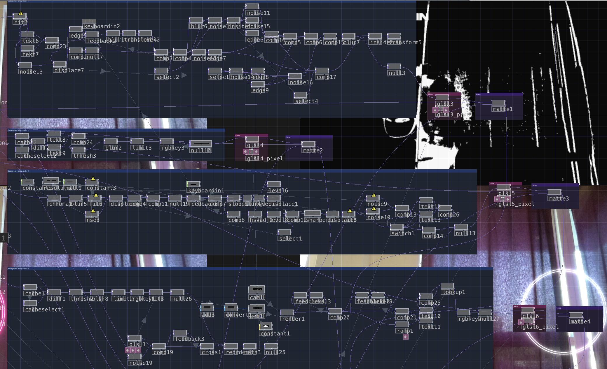
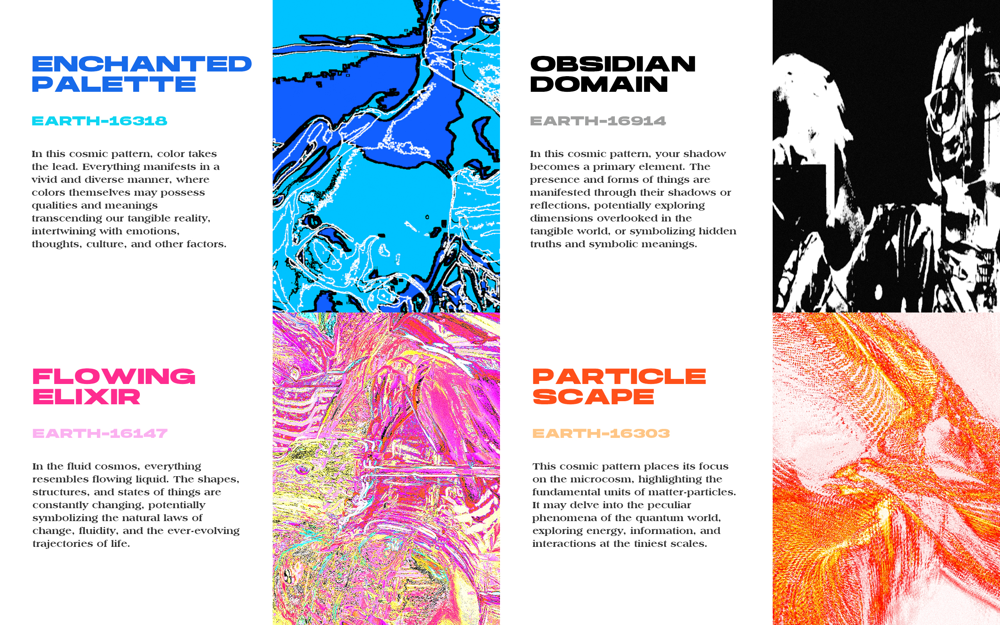

Universal Self
The focal point of my project is “Universal Self”, which is realized through Arduino programming and Touchdesigner interaction technology, drawing inspiration from Everything Everywhere All at Once and Spider-Man: Across the Spider-Verse. The work will explore the different versions of self in the multiverse.
Project Details / Background
The goal of this project is to explore the concept of the multiverse. This interaction allows people to discover the unique traits and personalities of each universe, sparking contemplation about their own existence. By creating distinct visual effects and interactivity, each universe mode represents a different form of self-expression – from colours, shadows, and fluids to particles. The aim is to encourage users to expand their imagination and contemplate the possibilities of their selves in different universes.
Image Gallery

Touchdesigner code
 Exhibition
Exhibition

Four universe styles